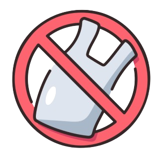
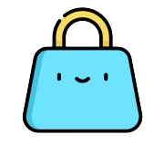
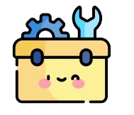

Zero Waste Lifestyle
kita hasilkan setiap harinya, demi kelestarian lingkungan kita akan menerapkan
prinsip 5R (Reduce, Reuse, Recycle, Repair, Rot), dan mengurangi dampak negatif
terhadap Bumi.

Reduce
Mengurangi konsumsi barang yang hasilkan banyak sampah sulit terurai, seperti kantong plastik dari toko.
Reduce
(Mengurangi)

Reuse
Menggunakan kembali barang yang masih bisa dipakai, seperti dengan membawa tas belanja sendiri saat berbelanja.
Reuse
(Menggunakan kembali)
Recycle
(Mendaur ulang)

Repair
Perpanjang masa pakai barang dan mengurangi kebutuhan akan barang baru, seperti memperbaiki elektronik yang rusak.
Repair
(Memperbaiki)
Rot
(Mengompos)
NO WASTE MOMENT
Ciptakan momen berharga bersama pasangan dengan Zero Waste Lifestyle!
Mulailah dari hal-hal kecil seperti membersihkan lingkungan sekitar rumah.
Jadikan setiap langkah menuju Zero Waste sebagai momen indah yang
mempererat hubungan dan peduli lingkungan.
Mulailah dari hal-hal kecil seperti membersihkan lingkungan sekitar rumah.
Jadikan setiap langkah menuju Zero Waste sebagai momen indah yang
mempererat hubungan dan peduli lingkungan.
Small step, Big change
Mari kita berkolaborasi dalam gerakan zero waste untuk menciptakan perubahan
yang berarti bagi lingkungan sekitar. Dengan memulai dari diri sendiri, kita dapat
memotivasi orang lain untuk ikut serta dalam upaya ini. Bersama-sama,
mari kita daur ulang dan mengurangi limbah plastik, karena
tindakan-tindakan kecil kita akan membawa dampak besar
bagi kelestarian bumi di masa depan.
yang berarti bagi lingkungan sekitar. Dengan memulai dari diri sendiri, kita dapat
memotivasi orang lain untuk ikut serta dalam upaya ini. Bersama-sama,
mari kita daur ulang dan mengurangi limbah plastik, karena
tindakan-tindakan kecil kita akan membawa dampak besar
bagi kelestarian bumi di masa depan.
2
Fitur-Fitur
Yang Tersedia
1
Tentang Penyu Hijaw
3
Tentang Kami
dukasi lebih banyak lagi masyarakat mengenai gaya hidup zero waste. Menye-
diakan tips dan trik zero waste yang dapat diterapkan dalam kehidupan sehari-hari. Menyediakan peta sampah untuk membantu masya-
rakat menemukan lokasi bank sampah dan tempat daur ulang disekitar mereka.